COWMATA PRO / 3.9.6
From data preparation to delivering results
Learn by task. At each step, check the input, the action, and the result.
Finish one practice run on a copy before formal annotation. Administrators and operators share the data and the annotation rules, and work within their permissions.
This guide works offline. Click an image to open the original. Browser print can save a PDF. The figures include measured screenshots and example screens that are clearly marked. None contain real account credentials.
01 · Everyone
Complete one full workflow first
Help > Illustrated beginner guide…
Before you start: the installer has finished, and you have administrator or operator sign-in details.
- Read “Activation and accounts” first. Both administrators and operators can view the full guide.
- Prepare the ledgers and the data, then finish the download or the video classification.
- Open the project, choose the date, cow, and record, then choose the views to observe now.
- Check the recording time and the sensor time, create labels, look at the evidence, and save.
- An administrator exports a dataset, trains, or imports a model for the task. An operator finishes the annotation and submits the result.
When finished: you have a project and labels that can be opened again. Analysis results are delivered through a separate output folder.
02 · Everyone
Understand administrator and operator permissions
Window title; Account menu
Before you start: accounts are managed by the sole administrator.
- Read the account and role in the window title.
- Operators use the data-preparation and annotation functions they are allowed to use. Restricted menus are grey or show a permission note.
- Administrators complete dataset, model, and analysis tasks, and maintain operator accounts from Account > Account management….
When finished: you can tell whether a function is unavailable because of permissions or because no data has been selected yet.
03 · Everyone
Administrator sign-in and an operator's first activation
Start COWMATA Pro
Before you start: you are online. The administrator has an account and password. An operator also needs an authorization code issued by the administrator.
- In the sign-in identity, choose Administrator or Operator.
- An administrator enters the account and password. No authorization code is required. The same administrator account can be used on another computer.
- An operator's first sign-in uses the account, password, and authorization code. After this computer is activated, later sign-ins can use the account and password and leave the authorization code empty.
- Save password and Sign in automatically are both unchecked by default. If only Save password is checked, the next visit fills in the password and you still click sign-in. Automatic sign-in happens on the next startup only if Sign in automatically is explicitly checked.
- If you forget the password, click Forgot password. On the administrator's maintenance computer you can view or edit the local account CSV. On other computers, contact the administrator. After a password change or a revoked authorization, verification runs again.
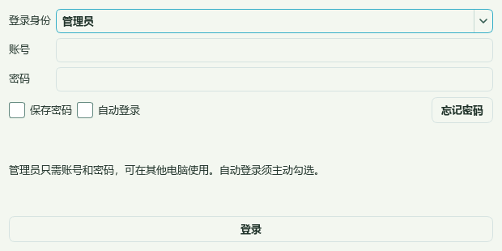
Illustration of the administrator sign-in screen: account and password only.
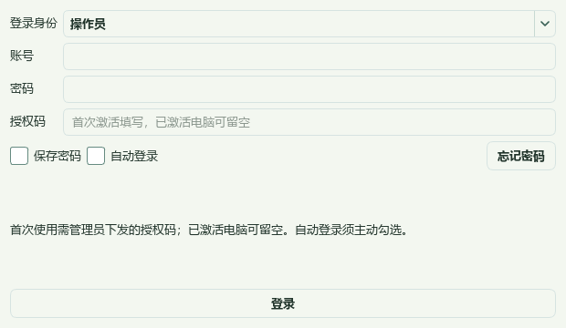
Illustration of the operator sign-in screen: the first sign-in needs an account, password, and authorization code.
When finished: you are in the workspace that matches the account role.
04 · Administrator
Issue and revoke accounts in a batch
Account > Account management…
Before you start: you are signed in with the sole administrator account.
- Set how many accounts you need in Number to generate, then click Generate in batch.
- Select the account row to hand out and click Copy selected. Give only that one row to the assigned person.
- The account table keeps three columns: account, password, and authorization code. The administrator authorization code is empty. An unused operator code can be distributed when needed.
- To revoke access, select the account and click Delete selected. Check the account, then confirm. The sole administrator cannot be deleted here.
- On the administrator's maintenance computer you can use Open local CSV. Close an old spreadsheet window before opening it again, so an old cache does not overwrite the three-column table.
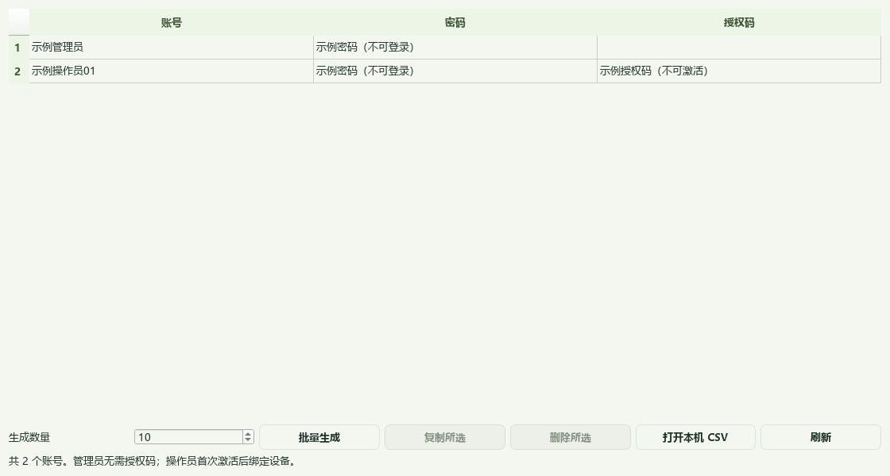
Illustration of account management: every row is example information that cannot be used to sign in.
When finished: operators use their own accounts. A deleted account loses access after the service verifies it.
05 · Everyone
Open a project organized by date
File > Open project… (Ctrl+O)
Before you start: the farm folder already contains classified sensor JSON or video.
- Select the farm or data-project folder.
- Check the collection category, data type, and date.
- Expand the source list, select one record, and check the ear tag, device, and field mark.
- Check the recording views needed now, then wait for the search result for that time range.
When finished: the waveform shows that record, and the recording is positioned by the shared reference time.
06 · Everyone
Start from one JSON file or one video
File > Open IMU…; File > Open one video and pair an IMU file...
Before you start: you have a readable raw JSON file and a video that plays normally.
- From Open IMU…, select one JSON file and check the record information that was parsed.
- To start from a video, use Open one video and pair an IMU file... and select the paired IMU file when prompted.
- Confirm the picture and the curves before time alignment.
When finished: the current file is on the annotation workspace.
07 · Everyone
Save, continue, and exit safely
File > Save (Ctrl+S); File > Save and exit
Before you start: a project or a human annotation already exists.
- Use Save to write the current human result.
- When one record is done, use Finish this IMU record…, check the prompt, and save.
- When leaving, choose save and exit. If a background save or stop is still running, wait until it finishes.
- The next time you open the original project, check record progress and the saved labels.
When finished: labels, the current position, and project progress are kept.
08 · Everyone
Use the legacy-project compatibility entry
File > Legacy compatibility
Before you start: you have a copy of an old single-video project.
- Import an old project with Import legacy single-video project….
- When you need the old interface, use Open legacy single-video window.
- After import, check the source, time mapping, and labels one by one. Do not treat the old filename as proof that synchronization is correct.
When finished: the old project can still be checked. The original file is kept as the fallback.
09 · Everyone
Selectively download from the three ledgers
Data preparation > Edge data download...
Before you start: prepare 扬大测试设备台账.csv, 扬大产犊登记汇总.csv, and 样本试验台账.csv. The server connection must be available.
- Read the ledgers again. Review records marked eligible, incomplete, or excluded, and the reason.
- Check that calving start, calving end, IMU, pulse, and temperature all have values.
- A record can be downloaded only when both the IMU and the temperature are valid. The download includes Motion, PPG, and Temp.
- After confirming the farm and the monitoring-purpose category, start synchronization. Automatic synchronization runs only while the program is running.
- After the ledger is completed later, synchronize again. The software reviews the ledger again at the start of each round.
When finished: only records that meet the current ledger rules are downloaded, and they are classified by monitoring purpose.
10 · Everyone
Classify several video root folders at once
Data preparation > Organize data… > Standard data classification
Before you start: the videos play normally, and the farm, category, and copy-or-move method are decided.
- Select the farm folder, category, and classification method.
- Click Choose folders again… to open the Windows folder picker. Ctrl or Shift selects several root folders. To add more sources, click Add folders…. If the selection is wrong, click Clear folders.
- Wait while each folder's views are listed in the background. Check the items to process and check the archive view.
- Click Classify now. In the status and the records, see what is in progress, finished, or in error.
- To stop, click Pause. Keep the same task settings, then continue.
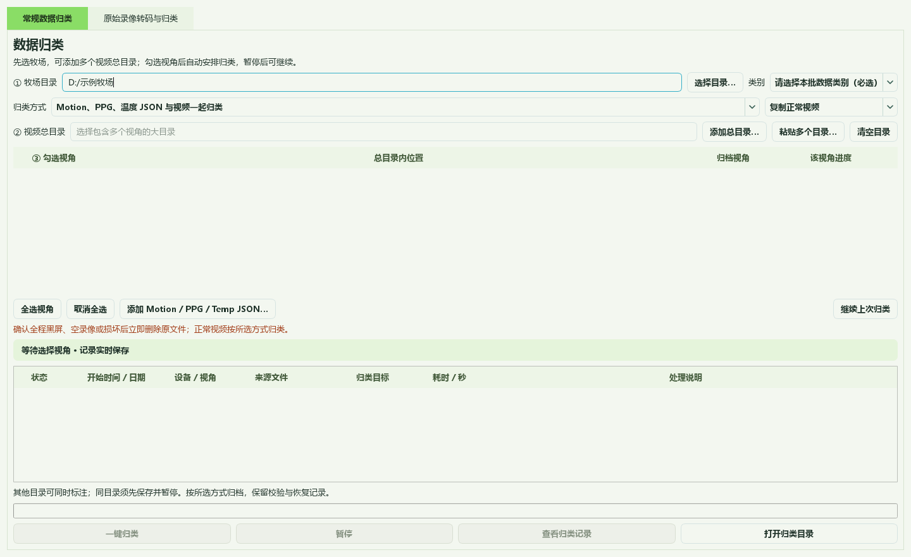
Illustration of standard classification: set the farm first, then add one or more source folders.
When finished: timestamped videos are written by category, date, and view.
11 · Everyone
View, resume, and check classification records
Data preparation > Organize data…
Before you start: a classification task already exists.
- Open View classification records and, by view, check each file's source, target, and note.
- After a pause, continue the previous classification. Confirm that the farm, category, time range, and view were not changed by mistake.
- Use Open classified directory to check the actual MP4 files.
- If the target or the classification conditions changed, follow the prompt and create a matching new task. Do not reuse the old target.
The classification-record entry is at the bottom. After a pause, check the task settings before continuing.
When finished: each task record can be matched to the actual output.
12 · Everyone
Convert raw recordings to standard MP4
Data preparation > Organize data… > Transcode and classify original recordings
Before you start: you have readable DAV/DHAV files, a folder, or an original recorder disk.
- Select a file or folder source. For an original recorder disk, use the drive-letter list and Refresh recorder disks.
- Select the output farm and category. Fill in a Beijing-time range and split-by-day across midnight when you need them.
- Click Scan original recordings. Channels 01–20 map automatically to views 01–20. A view with no source is not connected.
- Use Check selected channel thumbnails to confirm what each channel shows.
- Click Start transcoding and classification. When it finishes, open the classified directory and check the task record.
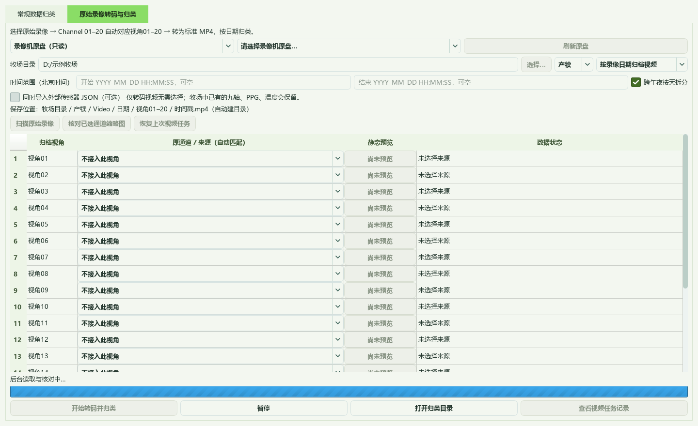
Illustration of raw-recording preparation: after the scan, check channels against archive views.
When finished: the output path looks like 牧场/产犊/Video/日期/视角01/日期_时-分-秒.mp4 (farm / calving / Video / date / view 01 / date_hour-minute-second.mp4).
13 · Everyone
Widen the recording search and refresh sources
Data preparation > More data preparation tools > Video index
Before you start: a project is open.
- If no picture is found at the current time, first choose Expand search.
- To scan the whole project, use Full indexing…. Pause search stops the background search.
- After new files have been copied, use Refresh sources (F5).
- If something is still wrong, open Verify sources… to see file and time information.
When finished: you can tell apart not yet searched, a missing file, and a time that did not match.
14 · Everyone
Check copy batches and recording archives
Data preparation > More data preparation tools > Video index
Before you start: the original project and the copy to check are readable.
- For a new batch of copies, use New copy batch… to distinguish the source.
- To verify content, choose Verify contents…. It reads the whole file. Wait until the task finishes.
- To check an external recording copy, use Verify archive… and select the matching archive folder.
- Check each result and each error note.
When finished: you have a check record for content identity and for the archive copy.
15 · Everyone
Export a standard MP4 copy
Data preparation > More data preparation tools > Export standard MP4 copy...
Before you start: the normal recordings to process are selected.
- Select the original recording whose duration needs to be checked.
- Choose the target file for Save a standard MP4 video copy (retain original).
- Wait until the frame-count and duration check finishes, read the completion notice, then play the output MP4.
When finished: a separate standard MP4 copy has been created.
16 · Everyone
Keep a clear view among 20 camera views
Main window > Sources; Observe / Multiview / Signals
Before you start: a project with several views is loaded.
- In the source list, check at most 8 views for this observation.
- Switch view groups or change the checks to look at the other views.
- Observe emphasizes the main view. Multiview compares views together. Signals shows a draggable small picture above the signal.
- Double-click, or use the enlarge control, to view one stream. Esc restores the previous layout.
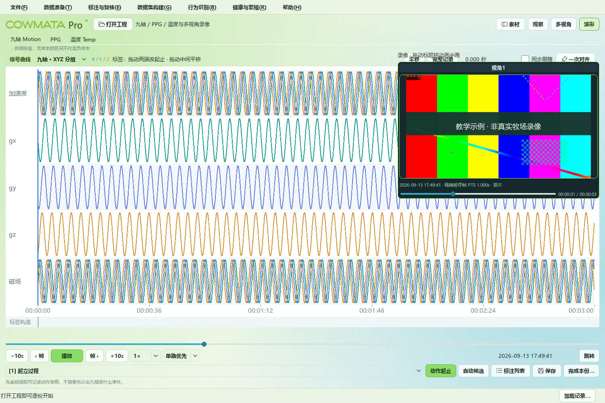
Layout example: the picture-in-picture can be dragged. The example signal and test picture are not a real annotation.
When finished: switching layout keeps the reference time and does not squeeze 20 streams into one picture.
17 · Everyone
View IMU, PPG, and temperature curves
Main window > IMU Motion / PPG / temperature Temp
Before you start: the JSON for that data type is readable and its ownership is clear.
- After selecting a record, switch among the three data pages.
- On the IMU page, choose a group to see acceleration, angular velocity, and magnetic field.
- Zoom or drag the waveform. Ctrl+Shift+F shows the full record.
- Check the reference time and the gaps, then compare the label for the same event.
When finished: the three data types are shown with the shared labels and the corresponding time.
18 · Everyone
Finish one alignment and fine calibration
Main window > Align once; Annotation & review > Time alignment
Before you start: the recording can show a usable frame, and the matching action can be found on the waveform.
- Click Align once. Move the video and the IMU separately to the same action moment.
- Click Complete alignment and check that they stay in sync.
- If they drift later, open Fine calibration (optional)... and add a corresponding point farther away.
- If one camera is offset by itself, use Camera calibration… and check the current main view.
- Where there is no coverage, use Jump to next recorded period.
When finished: there is an explicit time mapping. Later labels and pictures are positioned by that mapping.
19 · Everyone
Create human labels and edit boundaries
Label choice on the main window; Annotation & review
Before you start: identity and synchronization have been checked.
- Choose the event type. Record an interval at the start and end of the action. For an instantaneous event, record only the time point.
- Select the event in the annotation list and check the waveform position and the picture.
- Use Edit selected annotation... to change the type, boundaries, and note.
- After a multi-selection, use Bulk edit annotations…. When deleting, check the selected rows.
- Undo with Ctrl+Z, redo with Ctrl+Y, then save.
When finished: the label keeps the event id and the human-review content.
20 · Administrator
Review automatic candidates 1, 2, 7, 9, and A
Annotation & review > Generate candidates...
Before you start: a complete record is selected, and the model matches the data type.
- Confirm the current cow id, record, and model version.
- Choose the events to recognize, then run candidate prediction.
- Click a candidate to locate the waveform and the recording. Accept, adjust, or exclude each one.
- When finished, save the result that a person confirmed.
When finished: candidates become human-reviewed labels, which makes them faster to find.
21 · Everyone
Select an interval on the waveform and confirm a draft
Annotation & review > Create a candidate from the selected IMU interval; Labels and evidence
Before you start: a usable interval or a video draft already exists.
- Select the interval to check on the waveform and create a candidate.
- Check the event, cow id, time mapping, and whether the video has reached the right position.
- When a video draft should be used as IMU ground truth, use Confirm selected draft as IMU truth.
- Follow the on-screen prompt when evidence is insufficient, then save.
When finished: the difference between a draft and a confirmed label is kept.
22 · Everyone
Save and review multi-view evidence images
Annotation & review > Labels and evidence > Retain camera evidence images…
Before you start: an event and the available views are selected.
- Move the picture to the moment you need to keep.
- Open the save window and check one image for each view.
- After checking by hand, confirm the save.
- In history review, select that label and switch to Saved evidence images.
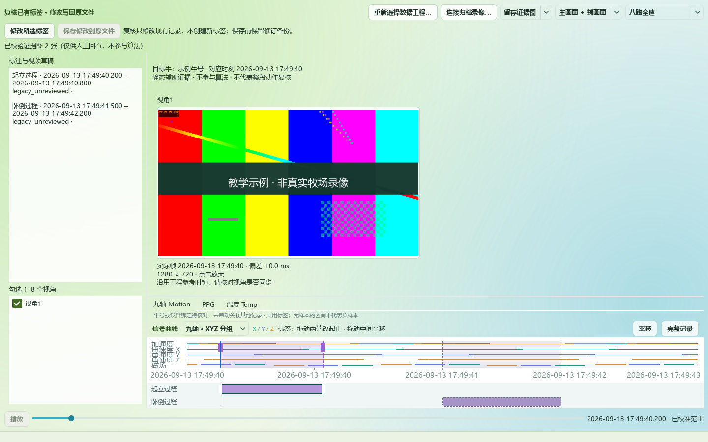
Saved-evidence example: switch evidence images and check the selected label and its source.
When finished: the images are saved with the annotation as evidence for human review.
23 · Everyone
Review existing labels and the original recording
File > History… (Ctrl+Shift+O)
Before you start: an annotation JSON exists, and the source or archive can still be opened.
- Open the annotation file and read the notice at the top.
- Click a label on the left. Watch the curve position and the Original video frame for that moment.
- Switch to Saved evidence images to see the pictures linked to the label.
- After the original project is moved, use the source or archive reconnect entry provided in the window.
- To change a label, edit the existing label and save it to the original label file.
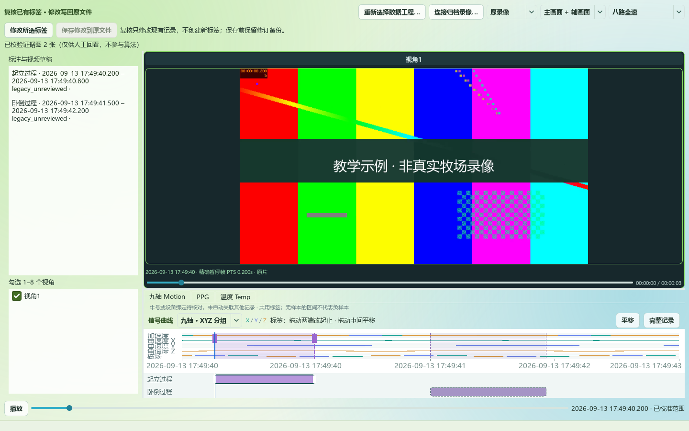
History-review example: after a label is selected, the original footage is positioned at the matching moment.
Saved-evidence example: switch evidence images and check the selected label and its source.
When finished: video, signal, and evidence are reviewed at the original event position. The label is not created again.
24 · Everyone
Finish this record and continue to the next
Annotation & review > Finish this IMU record… / Next unfinished IMU record
Before you start: the human check of the current record is done.
- Save and check unfinished events.
- Click Finish this IMU record… and check what was completed.
- Choose Next unfinished IMU record to continue.
- To rework a record, choose Reopen this record.
When finished: a completed record keeps its finished state. A record sent back for rework returns to in progress.
25 · Everyone
Send back and receive annotation results
Annotation & review > Collaboration
Before you start: the collaboration target and the receive folder given by the administrator are confirmed.
- In Return settings…, check the return target and the identity information.
- Finish and save one annotation on a copy, then check the return status.
- The receiver uses Receive results… to check the source and conflicts.
- Keep the conflict notice. Decide by hand, then merge.
When finished: multi-person results are linked by the source record. They are not overwritten just because the filenames match.
26 · Everyone
Adjust display, playback, and performance
Annotation & review > Display and playback
Before you start: a record is open. Playback performance can depend on the disk and the graphics card.
- F11 toggles full screen. Use the source-list and annotation-list switches to arrange the space.
- In Interface and playback settings..., adjust the layout and the playback policy.
- For two pictures, use Two-view main width… to adjust the proportion.
- If playback stutters, open Performance… to see the player count and seek statistics.
- When needed, switch hardware and software decoding, then reopen the project as prompted.
When finished: the picture stays clear and the annotation interface stays usable.
27 · Administrator
Build and keep updating a full dataset
Dataset construction > the dataset for the task
Before you start: the human labels and the original records are readable.
- Choose the behavior recognition, calving prediction, estrus prediction, pregnancy monitoring, or disease monitoring dataset.
- Click Choose source... to add the matching material, and confirm the output root folder.
- Click Update complete dataset. In Live records, check the Raw/Label pairing and the errors.
- To stop, pause, then use Resume update.
- When it finishes, open the dataset folder and check the manifest and the pairing.
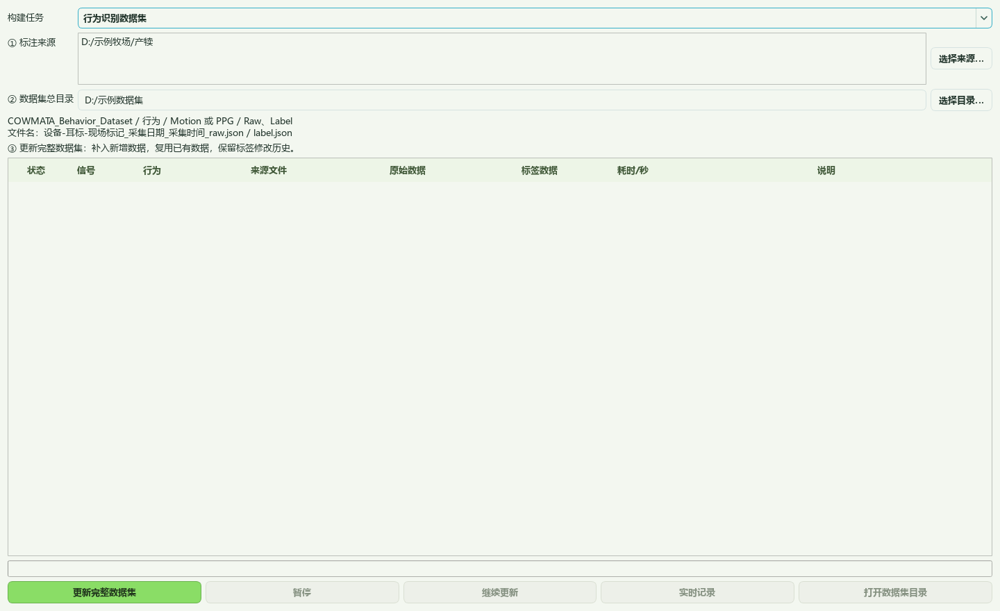
Illustration of the dataset screen: add sources, check the output root folder, then update the complete dataset.
When finished: you have a dataset that can keep being updated. Identical content can be reused. Label changes keep a trace.
28 · Administrator
Export full results, snippets, and training-compatible formats
Dataset construction > Share annotations and snippets
Before you start: the annotation is saved and the export range is confirmed.
- Full record… is for delivering the current result.
- Selected snippet… is for a selected IMU time range and its linked labels.
- Training data… is for a batch export in a compatible format.
- When it finishes, open the result again in an isolated location and check the record count, identity, labels, and evidence.
When finished: you have an export that fits that delivery purpose.
29 · Administrator
Train and evaluate one behavior model
Behavior recognition > Training & Recognition… > Train
Before you start: you have a Raw/Label dataset that matches the data type.
- At the top, choose the behavior and the data type.
- Select the training dataset and click Load all training records.
- Check cow ids, devices, label counts, and SHA-256.
- Click Train selected algorithm. When it finishes, look at the history, evaluation, visualization, and data problems.
- Open this result and keep the model and the training information.
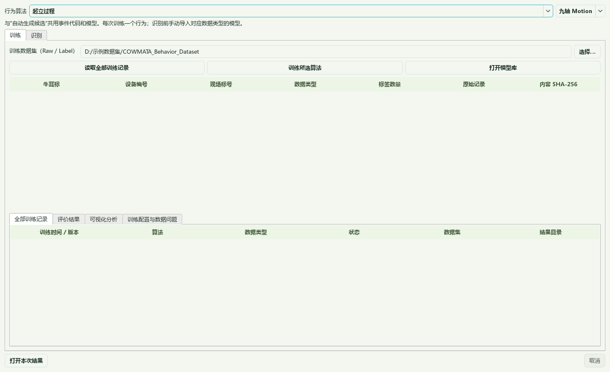
Illustration of the training screen: after records are loaded, check the evaluation, the result, and data problems.
When finished: a traceable training result and a held-out evaluation are produced.
30 · Administrator
Import a model and recognize data
Behavior recognition > Training & Recognition… > Recognize
Before you start: a usable model and raw JSON of the matching type are available.
- Select the target raw-data folder.
- Click Import model manually… and select the matching model manifest, suite.json.
- Check the behavior, data type, and model version.
- Click Recognize selected behavior.
- Open this result, review the candidates, and record the human-review conclusion.
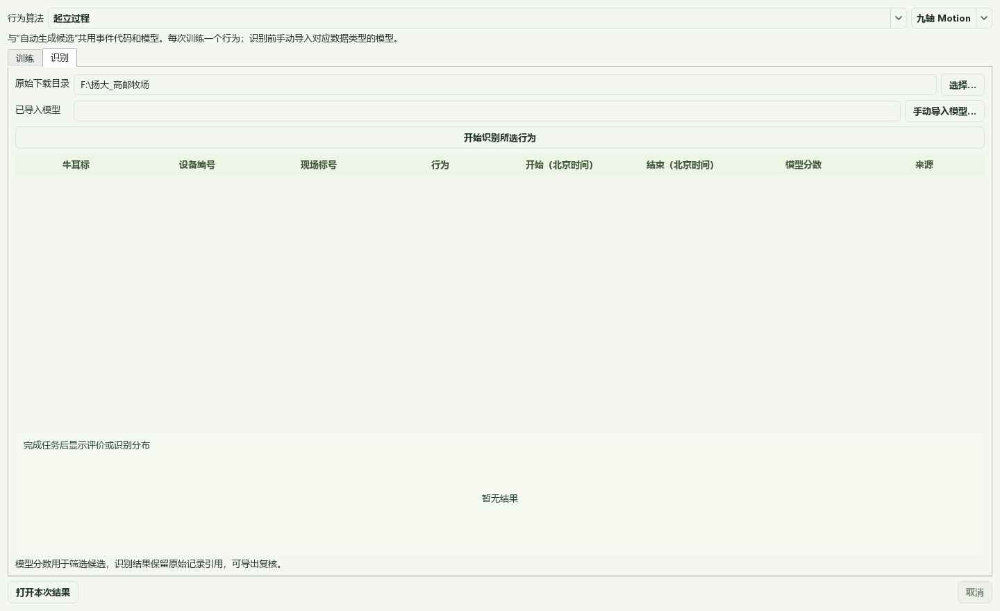
Illustration of the recognition screen: import a matching model by hand, then run recognition.
When finished: recognition candidates and a result file for that behavior are written.
31 · Administrator
Manage the model library and inspect algorithms one by one
Behavior recognition > Open model library; Annotation & review > Algorithm management / More annotation tools
Before you start: a model exists, or a record is open.
- Algorithm management opens the training and recognition workspace. Open model library shows the external save location.
- In individual algorithm inspection, choose an event and check the single camera, the data type, and whether an executable model is available.
- Run a supported algorithm and check the result. For an event with no registered model, follow the on-screen notice.
- Click Return to annotation layout to restore the previous observation layout.
When finished: the model, the candidates, and the matching event stay consistent.
32 · Administrator
Generate time-sliced calving alerts from one JSON folder
Health & reproduction > Calving > Folder risk timeline
Before you start: a decision model and its matching behavior model have been imported. The folder may contain Motion, PPG, and Temp for several days.
- Turn this mode on by hand, then select the JSON folder.
- Check the model, cow id, data span, and coverage.
- Click Start chronological prediction.
- For each cow, view the time series, data coverage and gaps, and continuous alert intervals.
- Open this result, save the output JSON/CSV, and review it against the farm.
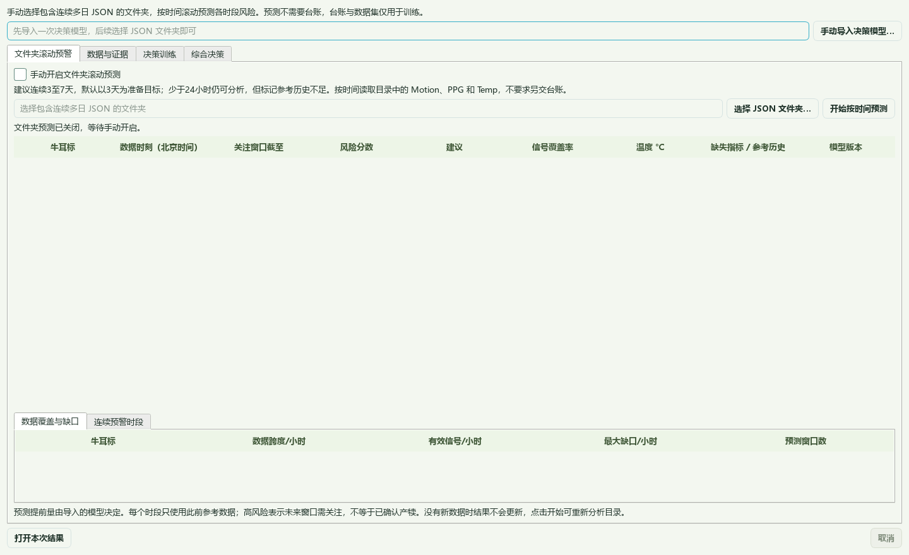
Illustration of the folder risk timeline: the user turns it on by hand.
When finished: time-sliced results are shown separately for the sampling window and for the time when prediction becomes available after the server receives the package. You do not have to submit a training dataset or a calving registration at the same time.
33 · Administrator
Build combined evidence and train a decision model
Health & reproduction > Calving > Data & Evidence / Decision model training
Before you start: the administrator has training data, an explicit calving outcome, and an imported behavior model.
- In Data & Evidence, select the source, refresh the imported behavior models, and generate combined evidence.
- In Decision model training, select the evidence JSON and the CSV of exact calving registrations.
- Choose the algorithm and the lead time, then click Train and validate by cow.
- Review the evaluation, missing items, and data problems, then save the model result.
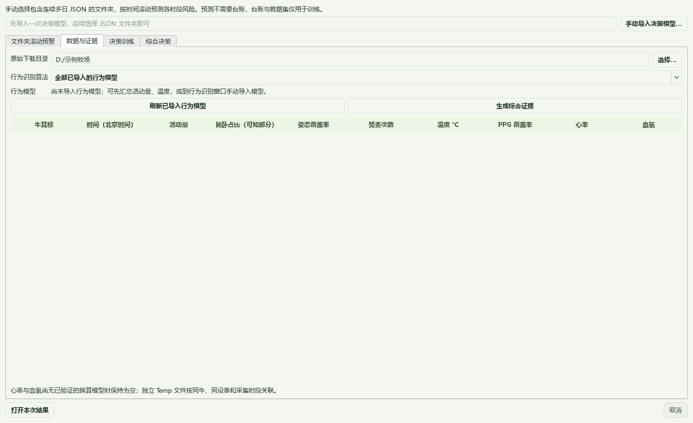
Illustration of Data and Evidence: select the data and the matching behavior model.
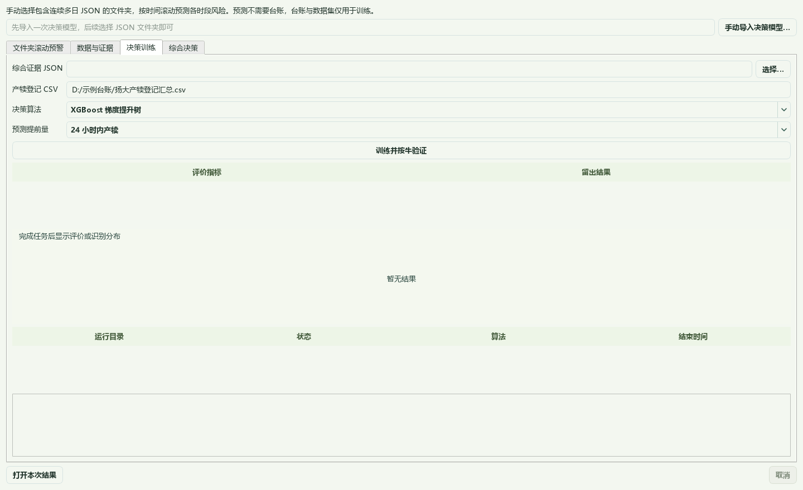
Illustration of decision-model training: use data with an explicit outcome and check the validation result.
When finished: a decision model is produced that matches the input features and the behavior-model version.
34 · Administrator
Import a decision model and check the results
Health & reproduction > Calving > Decision models
Before you start: evidence and the matching decision model have been produced.
- Import decision.json by hand.
- Select evidence that matches the model features and the behavior version.
- Click Run combined decision analysis.
- View the interval results by cow, and open this result folder.
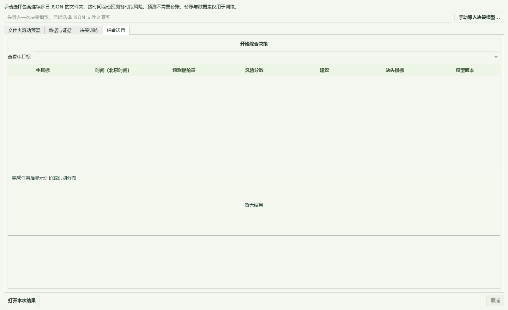
Illustration of the combined decision screen: import a matching model and view the time-sliced output.
When finished: you have a traceable decision output.
35 · Administrator
See the limits of the estrus, pregnancy, and disease entries
Health & reproduction > Estrus / Pregnancy / Disease
Before you start: the data to check is open.
- Choose the estrus, early pregnancy, mid pregnancy, late pregnancy, or disease entry.
- Read the model-connection status and the data requirements.
- When no executable model is registered, return to annotation or prepare a dataset. Do not produce a health conclusion.
When finished: you can tell an analysis that can run from a model function that is not connected yet.
36 · Everyone
View help, version, and updates
Help > Quick start / Illustrated beginner guide… / About
Before you start: the software can start. Checking for an online update needs a network.
- F1 opens a short quick start.
- Open this illustrated guide and find a task from the contents or the search box.
- In About, see the version, license, and update entry.
- After an update is downloaded, save and pause tasks first, then follow the prompt to save, exit, and upgrade.
- If an update fails, read the explicit error. If the old version was not replaced, it remains. Use the official installer to upgrade when needed.
When finished: the guide, the program version, and the release notes correspond.